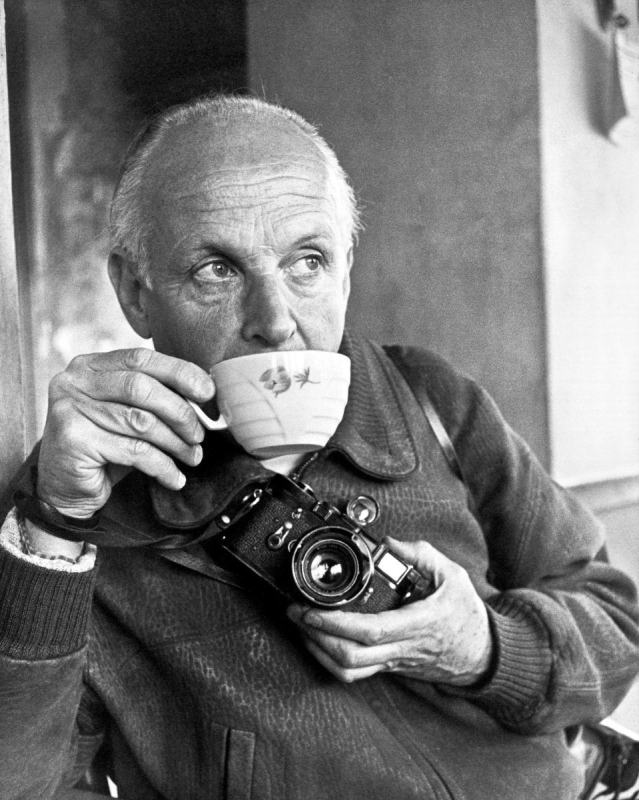
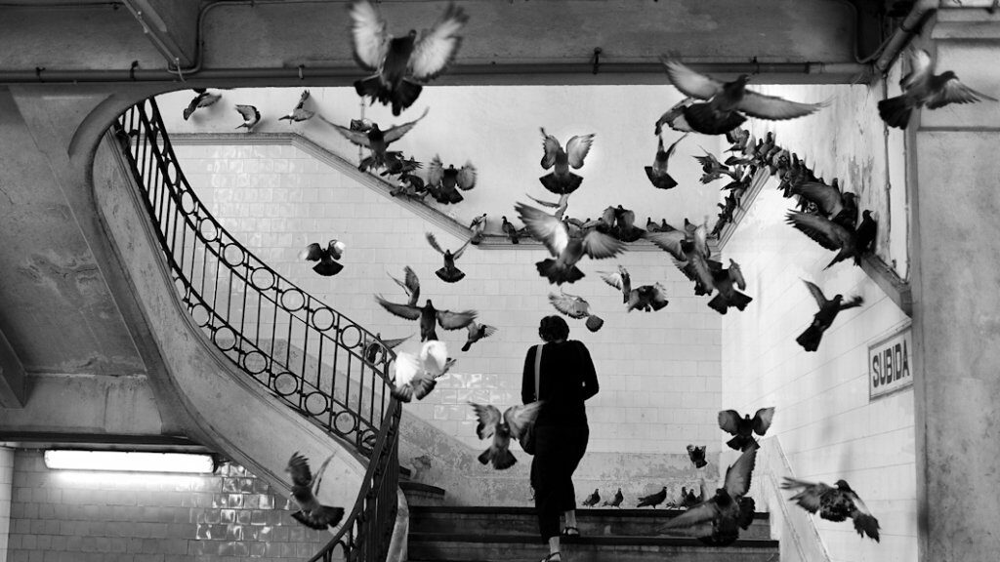
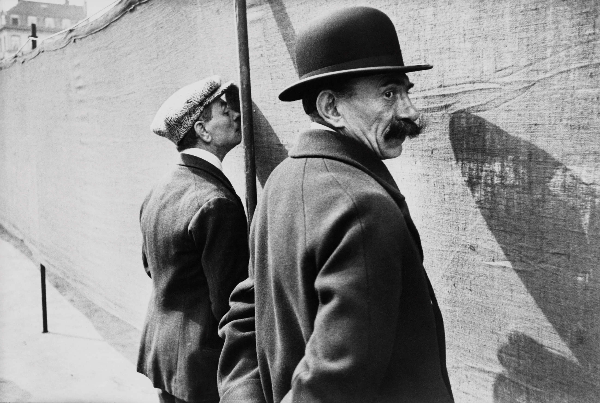
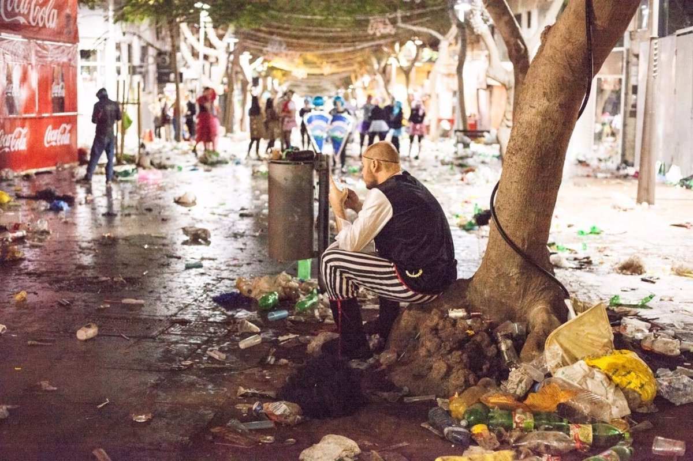
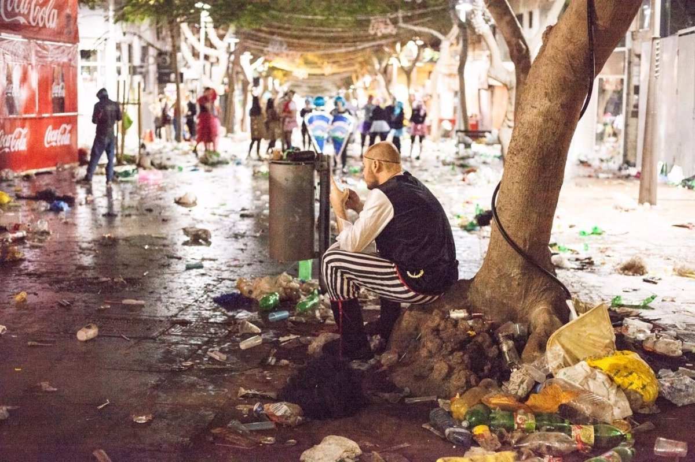

Los fotógrafos que me inspiraron en este proyecto son Henri Cartier-Bresson, Edward Weston, André Kértz, Irene Sanfiel y Raúl Ortega Ayala...
Henri Cartier-Bresson

Bresson, conocido como el padre del fotoperiodismo fue un fotógrafo francés que se inició originalmente
en la
pintura y que más tarde fue reclutado en el cuerpo de fotografía y película de la Segunda Guerra
Mundial,
colaboró por un tiempo con la fotografía a favor del cine en un reportaje sobre el retorno de los
prisioneros desplazados; luego de su trabajo como reportero se centró en un género conocido como la
fotografía cándida.
Su técnica se caracteriza por la búsqueda de reflejar la esencia del
momento que inmortalizaba, denota la
naturalidad de los sujetos y temas sencillos de la vida cotidiana. De ella tomé el instante decisivo.


Irene Sanfiel
Bajo el seudónimo de ziREJA, esta artista multidisciplinaria española ha desarrollado un trabajo
fotográfico en el que refleja las diferentes formas de agresiones medioambientales que sufren las costas
españolas por la llegada de materiales de desechos y la absurda relación del ser humano con la basura,
vinculándose de este modo a la denuncia medioambiental.
Actualmente reside en Tenerife donde prepara intervenciones artísticas en entorno urbano.
https://instagram.com/zireja?utm_medium=copy_link
.jpg)
 
